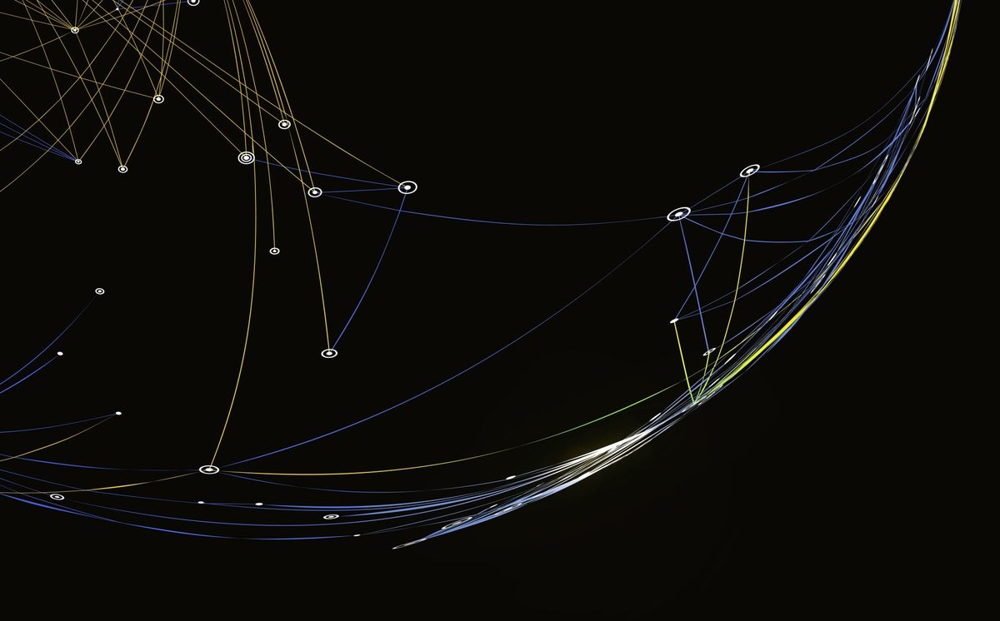

Adds a plain-language caption under every picture in a PowerPoint deck and writes screen-reader alt-text for the images that are missing it — across a whole deck in one run, without altering the original file.
Jake Benhart · NC State University · College of Engineering · Operations Research
What it does: for every picture in a .pptx deck, captioner writes a short caption identifying the image and — for pictures with no alt-text — authors the screen-reader alt-text (the OOXML descr field), across the whole deck in one run.
How it does it: it reads each embedded image with Claude Code’s vision, writes the caption and alt-text into a copy of the deck (the original is never touched), and checks every result against an automated verification gate before it ships. Existing alt-text is preserved; decorative images are marked decorative so screen readers skip them.
Why it matters: pictures without alt-text are invisible to a screen reader — a student using one hears nothing where the visual should be. Captioner fills that gap at deck scale instead of picture-by-picture by hand, and leaves an auditable record of every change.
You tell captioner the subject — it writes the alt-text for your field. At the start of a run, captioner asks for a one-line course/subject context (e.g. --context "Biology 101 — cell mitosis" or --context "Art History — Baroque painting"). It uses that context to write both the visible captions and the screen-reader alt-text in the right vocabulary for your discipline — so a mitochondrion, a Baroque chiaroscuro, or a circuit diagram is described correctly for the student using assistive technology, rather than as generic shapes. There is no built-in field list; the subject you supply is what makes the alt-text discipline-accurate.
Choose what gets written — captioner asks first. The visible caption and the screen-reader alt-text are two independent layers, and you decide which you want. Captioner asks up front, then runs one of three ways:
--descr-only): write the screen-reader alt-text and add no visible caption to the slide — for decks you want made accessible without changing how they look.--write-descr): the visible caption and the alt-text.Either way, existing alt-text is preserved and decorative images are marked decorative so screen readers skip them.

No alt-text on the picture. A screen reader reaches it and announces nothing.
“glowing network of dots and curved lines on black.”
Written into the file’s alt-text field, so a screen reader now describes it.
For every picture in a .pptx deck, captioner inserts a short (5–15 word) italic caption directly below the image. The caption identifies what the picture is — so sighted students know at a glance, and so a reviewer has a written record of every visual on every slide.
Captioner can also (with --write-descr, opt-in) author the OOXML descr attribute — the alt-text a screen reader announces — for pictures that have none, while preserving any alt-text a deck already carries and marking decorative images as decorative. Two independent layers: the visible caption on the slide canvas, and the invisible alt-text inside the file that assistive technology reads.
Each run is non-destructive — your original .pptx is preserved untouched — idempotent (re-runs replace prior captions cleanly), and produces a per-deck audit CSV that records the exact action taken on every shape.
The generated wording is meant to be reviewed. When a reviewer wants a change, captioner edits that caption or alt-text in place by deck and slide number — fix_captions.py --slide 20 --text "…" — leaving the rest of the deck untouched and backing up the file first. Corrections are one command per slide, not a re-run of the whole deck.
Captioner was first built for engineering course decks, but it has no built-in field taxonomy: it adapts to whatever subject you supply through a one-line --context prompt at the start of a run, so the captions and alt-text it writes draw on the right vocabulary for the subject at hand — for example --context "Biology 101 — cell mitosis", --context "Art History — Baroque painting", or --context "Constitutional Law — the commerce clause".
Those field names are just examples of the kind of context you can pass — the tool has no built-in subject list and isn’t benchmarked per field, so quality tracks the context and images you give it.
Captioner reads the .pptx file(s) you point it at and the images embedded inside them (the picture content is processed by Claude Code’s vision — see the note at the bottom of the page about where that data goes). Your original .pptx is never modified. Each run writes into a working directory you choose:
<work_dir>/captioned_decks/<deck>_captioned.pptx<work_dir>/audit/<deck>_audit.csv (plus <deck>_descr_audit.csv when you pass --write-descr)<work_dir>/qc/<deck>_spellcheck.csv and <work_dir>/qc/<deck>_qc.csvThe installer itself touches exactly one path on your system, ~/.claude/skills/captioner (or $CLAUDE_SKILLS_DIR/captioner), and announces what it is about to do there before it acts (see Install).
Every capability below is concrete and enforced by an automated verification gate on each run.
Photo:, Illustration:, Diagram:, Chart:, Screenshot:, Logo:, Map:, or Icon: — chosen from visual context. Pure subject identification: no descriptive prose, no “image of…” filler.--write-descr). Captioner can write the OOXML descr attribute — the alt-text a screen reader reads — for pictures that have none. It is preserve-by-default: any existing alt-text is left untouched (never overwritten), and decorative images get PowerPoint’s native decorative marking instead of a description, so screen readers skip them. --descr-only writes alt-text and adds no visible caption. This fills a required field for images that lacked one; it does not certify WCAG 2.1 conformance, and the authored wording is not independently verified — review it before relying on it.id attribute. Captioner reads each name deterministically from the XML and places a short caption directly under the icon — no model call, no variability. Caption size scales to the icon: small icons get small captions (font and box shrink to match) so the caption card never dwarfs the icon it labels.[decorative] with no visible caption. SmartArts whose only content is text labels are intentionally skipped — the text already lives in the slide’s accessible text layer.flagged-no-slot — never forced into a bad spot.--descr) an alt-text coverage gate that confirms every picture is either given a descr value or marked decorative. It exits non-zero on any defect; intentional skips are recognized as known-skips, not failures.--update-existing) replace prior captions cleanly — no duplicates accumulate — and hand-edited captions are preserved rather than clobbered..pptx is preserved untouched. A free-text deck context can bias vocabulary; toggles include --no-smartart, --bg-repeat-threshold, and a default-on, whitelist-aware spell-check / date QC pass (--quick / --no-spellcheck / --no-dateqc) that never silently “corrects” a real proper noun.fix_captions.py applies the fix in place, by slide number, editing only the named caption and leaving the rest of the deck untouched (the deck is backed up first). It covers all four kinds of fix: resize (--shrink-box), reposition (--move below|above|left|right), restyle (font / color / a fully transparent card), and retext. Every move is re-checked against the same placement rules and refused if it would create a new overlap; --dry-run previews and --verify re-scans before handoff.What backs each run is the verification gate, not a track record: every deck is checked by an independent verifier for six placement defect classes (text-overlap, footer intrusion, caption-inside-picture, caption-on-caption, text overflow, and a band caption burying a small picture) in 2D coordinates, plus — with --descr — an alt-text coverage gate. The verifier exits non-zero on any defect, so a caption over text, off-slide, inside another picture, or overlapping another caption cannot ship silently. It handles a wide range of layouts: title slides, dense bulleted content, photo grids, SmartArt icon strips, full-bleed backgrounds, and dark section dividers.
Runs are non-destructive — the original .pptx is preserved untouched — and every action is logged in a per-deck audit CSV for review and editing before sharing.
Before you start: the steps below are typed into your computer’s command-line Terminal (on macOS, open Terminal from Spotlight; on Windows, use the WSL or Git Bash shell). If working at a terminal is unfamiliar, this is a good point to hand the link to your IT or instructional-design team, who can run these steps for you.
Prerequisite: Claude Code must be installed — it provides the image-reading (vision) capability the workflow depends on. Captioner runs inside Claude Code, not as a standalone program. You also need Python 3.9+ with git available; the Python packages (python-pptx, lxml, Pillow, pyspellchecker) install in the steps below from requirements.txt.
git clone https://github.com/jbenhart44/captioner.git
cd captioner
git checkout v0.3.0pip install -r requirements.txtbash install.sh~/.claude/skills/captioner). It touches only that one path, prints exactly what it is about to remove before replacing an existing install, and checks all four Python dependencies for you.
/captioner <path-to-.pptx-or-folder> to caption a deck. To also write alt-text, add --write-descr.
Prefer a versioned archive for citation? Download the v0.3.0 tarball · All releases & notes
cd captioner
git fetch --tags
git checkout <new-version-tag> # e.g. v0.3.0 — replace with the version you want
pip install -r requirements.txt # re-run: cheap, and a version bump can add a dependency
bash install.sh # safe to re-run — a same-target relink just prints "nothing to do"
Then restart Claude Code. Stay on a tagged release — do not run git checkout main or git pull, which can pull unreleased work instead of a stable version.
Scope and limits — Captioner authors the alt-text field for pictures that were missing it. It does not on its own certify WCAG 2.1 conformance, it does not touch charts or non-picture shapes, and the wording it generates is not independently verified — a reviewer should check it (and can correct any item by slide number, per above). Pair it with a full alt-text review rather than treat it as a replacement.
Where your data goes — The captions and alt-text are generated by Claude Code’s vision, which runs on Anthropic’s API — so the picture content of your slides is sent to Anthropic for processing, the same as any other Claude Code request. If your decks include restricted content (for example FERPA-covered student work), review Anthropic’s data-use terms first. Your original .pptx is never modified.